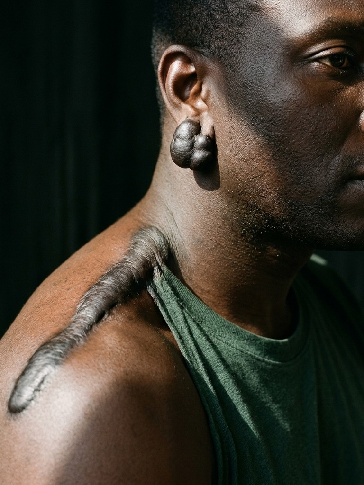

Scars are not a life sentence.
Raised, tight, dark, pitted or itchy: scars in Black skin behave differently. Treating them well starts with knowing exactly which kind you have.

What kind of scar is it?
- What it is
- An overgrowth of scar tissue that stays inside the original wound.
- Typical triggers
- Burns, wounds that took long to heal, tension across joints
- Course
- Often improves over 1 to 2 years
- Treatment
- Silicone, pressure, steroid injections, laser, sometimes surgery
- What it is
- A scar that keeps growing beyond the original wound edges.
- Typical triggers
- Ear piercings, acne on the chest and jaw, surgery, minor cuts. Runs in families.
- Course
- Rarely settles on its own; can recur after removal
- Treatment
- Combination therapy. Cutting alone often leads to a bigger scar.
- Types
- Icepick (narrow, deep), boxcar (wide, sharp edges), rolling (wavy)
- Also common
- Dark marks (PIH) that are not true scars and fade with the right care
- Treatment
- Subcision, microneedling, TCA CROSS, fillers, carefully chosen lasers
- Key point
- Treat active acne first, or new scars keep forming
- Goal
- A thin, flat, well-camouflaged line
- Prevention
- Silicone and sun protection from the moment stitches are out, for 6 to 12 months
- If it thickens
- Steroid injections, laser, revision after maturation
- Tip
- Tell your surgeon in advance that you scar thickly
- What they are
- Tears in the deeper skin layer from rapid stretching: pregnancy, growth, weight change
- Early (red/purple)
- Respond best to treatment
- Old (pale/silver)
- Improve in texture with needling and energy devices, rarely vanish
- Honesty
- Improvement, not erasure
Why cutting alone often fails.
A keloid is a healing response that never switches off. Surgery is another injury, and the body can answer it with an even bigger keloid.
Keloids are more common in people of African, Asian and Hispanic descent, often appear after piercings, and tend to run in families. Removing one without a plan to quiet the healing response leads to high recurrence rates.
- Combination plans: injections, silicone, pressure and, where appropriate, carefully timed surgery
- Adjuvant options in selected cases to lower recurrence
- Honest discussion of recurrence risk before any procedure
- Prevention advice: before piercing, tattooing or elective surgery, tell your clinician you are keloid-prone


Keloid scarCombination plan · 8 months
The toolkit.
Silicone & pressure
The foundation for most raised scars. Cheap, safe and effective when used consistently.
Steroid injections
Injected into thick scars every 4 to 6 weeks to flatten and soften. Dosing is cautious to avoid thinning or pale marks.
Microneedling & RF
Remodels texture, with energy delivered below the surface, which suits darker skin.
Selected lasers
Vascular laser for redness and itch; fractional lasers for texture, with conservative settings and test patches.
Subcision & fillers
Releases tethered rolling acne scars and lifts depressions.
Surgical revision
Excision, Z-plasty, grafts or flaps for scars that limit movement or remain disfiguring after maturation.
Scar FAQ.
Is a keloid cancerous or dangerous?
No. Keloids are benign overgrowths of scar tissue. They can be itchy, tender and distressing, and are worth treating properly.
Can a keloid be removed permanently?
Many keloids can be flattened and kept under control, but recurrence is a real risk. The aim is a long-term plan, not a one-off cut.
Can I get my ears pierced if I am keloid-prone?
It is a risk. Discuss it first. If you do pierce, choose a clean, experienced piercer, avoid piercing the cartilage, and seek early treatment if a bump forms.
How long before scar treatments work?
Most plans need a series over several months. Early scars respond faster than old, mature ones.
Do dark marks after acne count as scars?
Usually not. Post-inflammatory hyperpigmentation is a colour change that fades with sun protection and the right medical care, often over months.
Tell us about your scar.
A short consultation is the fastest way to know what is possible.